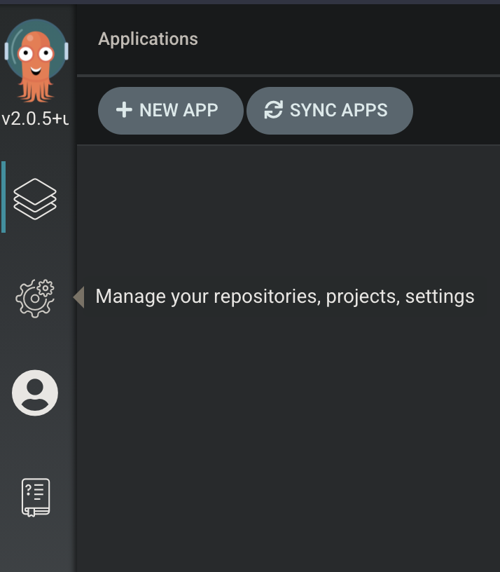
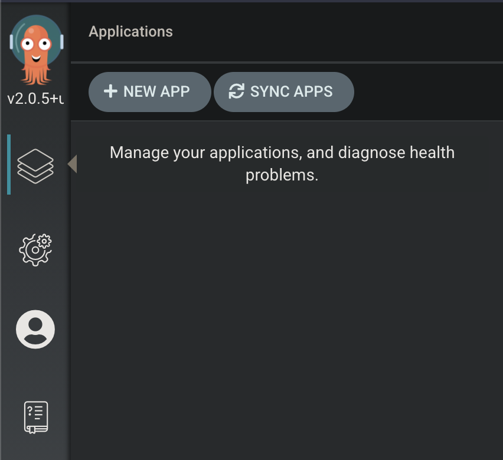
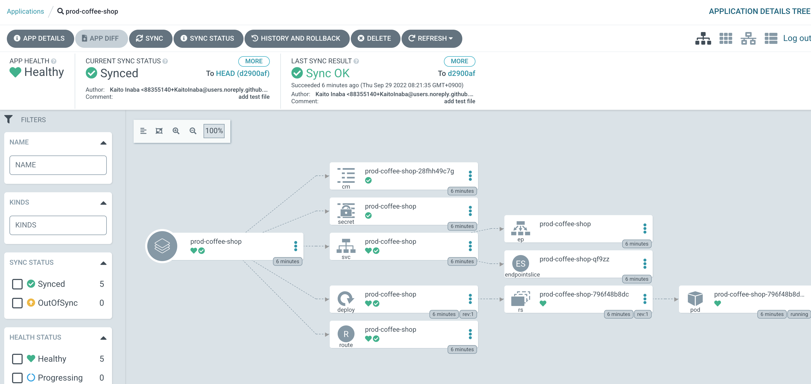

はじめに
このラボでは、OpenShift GitOps を活用し、アプリケーションを特定のプロジェクトにデプロイします。このデプロイでは、GitOps のコンセプトのもと、OpenShift GitOps がアプリケーションのYAMLマニフェストを起点とし、同期的にアプリケーションをデプロイする様子を確認します。
テストアプリケーションは、YAMLマニフェストおよびkustomizeファイルとしてgitリポジトリに保存されています。本ハンズオンではkustomizeがどのように機能するかの詳細については、そのgitリポジトリを調べる必要があります。
準備
GitOps Operator のインストールと確認
メールに記載されているユーザー名とパスワードを使用して、OpenShiftクラスターのWebコンソールにログインします。
-
Aministrator パースペクティブから、Operator → Operator Hub を選択します。
-
Filter by keyword… ボックスに
openshift gitopsと入力し、Red Hat OpenShift GitOps タイルをクリックします。 -
Install さらにもう一度 Install をクリックします。その際、オプションは全てデフォルト設定のままとします。
Project 作成
Roles/Rolebindings の設定
OpenShift GitOps がリソースを作成できるように Roles/Rolebindings の設定を追加します。
oc label namespace prod-coffeeshop argocd.argoproj.io/managed-by=openshift-gitops+ NOTE: 対象の namespace にラベル付をすることで必要なRoles/Rolebindingsが作成されることで、OpenShift GitOps の ServiceAccount が対象 namespace に対してリソースの作成・更新の権限を得ることができます。
Web UI を使った ArgoCD へのアクセス
| ArgoCD はまだ OpenShift と認証システムが統合されていません |
-
ArgoCD の admin パスワードを取得します:
-
OpenShift Web コンソールの一番上のドロップダウンメニューから Project:
openshift-gitopsを選択します -
左のナビゲーションバーで ワークロード → シークレット をクリックします
-
名前で検索.. 欄に
openshift-gitops-clusterと入力し openshift-gitops-cluster リンクをクリックします -
表示された画面を下にスクロールし、データ の admin.password 欄の右にある ⎘ をクリックし、クリップボードにパスワードをコピーします
-
-
次に ArgoCD web UI へのリンクを確認します
-
左のナビゲーションバーで Networking → Route をクリックします
-
場所 欄にいくつかリンクが表示されていますが、3番目に表示されている openshift-gitops-server に対する場所のリンクをクリックします
-
-
ArgoCD の web ui に Username
adminと先程クリップボードにコピーしたパスワードでログインします
Kustomize の動作確認
今回の Argo CD によって導入する Application では、Kustomize を利用しています。Kustomize でどのようにマニフェストが管理・変更されているのか確認しましょう。
Kustomize のインストール
-
Kustomize を踏み台サーバにインストールします。
-
Kustomizeをインストールします。
curl -s "https://raw.githubusercontent.com/kubernetes-sigs/kustomize/master/hack/install_kustomize.sh" | bash sudo install ./kustomize /usr/bin -
バージョンを確認します。
kustomize version
-
Kustomization.yaml の確認
-
レポジトリをクローンします。
git clone https://github.com/RH-OPEN/test-example.git cd test-example/coffee-shop-kustomize/coffee-shop -
ディレクトリ構成を確認します。
tree . |-- base | |-- deployment.yaml | |-- kustomization.yaml | |-- route.yaml | |-- secret.yaml | `-- service.yaml `-- overlays `-- production |-- configmap.env |-- deployment-patches.yaml |-- kustomization.yaml |-- route-patches.yaml `-- service-patches.yamlbase と overlays 配下のkustomization.yamlによって管理されていることがわかります。 -
base/kustomization.yaml の内容から、変更箇所を確認します。
cat base/kustomization.yaml --- apiVersion: kustomize.config.k8s.io/v1beta1 kind: Kustomization resources: - ./secret.yaml - ./deployment.yaml - ./service.yaml - ./route.yaml commonLabels: app: prod-coffee-shopベースとされるリソースの設定、label追加がされることが読み取れます -
overlays/production/kustomization.yaml の内容から、変更箇所を確認します。
cat overlays/production/kustomization.yaml --- apiVersion: kustomize.config.k8s.io/v1beta1 kind: Kustomization namePrefix: prod- bases: - ../../base namespace: prod-coffeeshop patches: - ./deployment-patches.yaml - ./route-patches.yaml - ./service-patches.yaml configMapGenerator: - name: coffee-shop envs: - ./configmap.envmetadata.name、namespaceが変更・追加され、*-patches.yamlによってパッチ適用、configmapのアサインメントがされていることが理解できます。
OpenShift GitOps の設定・同期
サマリー
-
テストアプリケーション専用の新しい "App Project" を作成します。
-
左側のナビゲーションパネルにある歯車のアイコンを使用して、ArgoCD Webコンソールから AppProject 管理インターフェイスにアクセスします。
 -
Projects をクリックし、次に New Project を選択。
coffee-shopと言う名前の新しいプロジェクトを作成します -
coffee-shopと入力し、Create をクリックします -
SOURCE REPOSITORIES までスクロールダウンし、EDIT → ADD SOURCE をクリックし SAVE をクリックします ソースリポジトリとして、アスタリスク
*が入力されていますが、このプロジェクトを使用するアプリケーションが任意のリポジトリが使用可能であることを示しています このプロジェクトのアプリケーションが任意のリポジトリから任意の場所から構成をプルできるようになったという事実を認識するために、この作業を行っています -
Destinations までスクロールダウンし、 Edit をクリックします
-
Add Destination をクリックし Namespace の下にある
*をprod-coffeeshopと書き換えますOpenShift GitOps Operator が稼働するローカルサーバーとなるため、サーバー名を入力する必要はありません。 prod-coffeeshopネームスペースがきちんと指定されていことに注意してください。 もし指定しなかった場合、prod-coffeeshopだけではなく、OpenShift 上の 全ての アプリケーションが ArgoCD から管理されることになります。 -
Save をクリック
-
左のナビゲーションバーから Manage Applications アイコンをクリック

-
これで、新しい ArgoCD の applications を OpenShift のアプリケーション管理に紐づけるための project を作成する事が出来ました。
Application を Production ネームスペースにデプロイする
Coffee Shopには、データベース、Coffee Shopのフロントエンドと注文管理システム、および準備から収集までのすべての注文の状態を管理する Barista サービスの3つのコンポーネントがあります。
データベースはすでにデプロイされています。
最初にCoffeeShopアプリケーションのフロントエンドコンポーネントのみをデプロイして、ArgoCDの "application" とは何かを理解しましょう。
ArgoCD インターフェースには "No applications yet" と表示されていると思います。 ここでは、ArgoCD インターフェースに貼り付けるための ArgoCD アプリケーションの YAML を提供しています。
-
NEW APP と EDIT AS YAML を順にクリックします
-
次のマニフェストをコピーして貼り付けます::
apiVersion: argoproj.io/v1alpha1 kind: Application metadata: name: prod-coffee-shop namespace: openshift-gitops spec: destination: server: https://kubernetes.default.svc namespace: prod-coffeeshop project: coffee-shop source: path: ./coffee-shop-kustomize/coffee-shop/overlays/production repoURL: https://github.com/RH-OPEN/test-example.git targetRevision: HEAD syncPolicy: automated: # automated sync by default retries failed attempts 5 times with following delays between attempts ( 5s, 10s, 20s, 40s, 80s ); retry controlled using `retry` field. prune: true # Specifies if resources should be pruned during auto-syncing ( false by default ). selfHeal: true # Specifies if partial app sync should be executed when resources are changed only in target Kubernetes cluster and no git change detected ( false by default ). allowEmpty: false # Allows deleting all application resources during automatic syncing ( false by default ). syncOptions: # Sync options which modifies sync behavior - Validate=false # disables resource validation (equivalent to 'kubectl apply --validate=false') ( true by default ). - CreateNamespace=true # Namespace Auto-Creation ensures that namespace specified as the application destination exists in the destination cluster. - PrunePropagationPolicy=foreground # Supported policies are background, foreground and orphan. - PruneLast=true # Allow the ability for resource pruning to happen as a final, implicit wave of a sync operation # The retry feature is available since v1.7 retry: limit: 5 # number of failed sync attempt retries; unlimited number of attempts if less than 0 backoff: duration: 5s # the amount to back off. Default unit is seconds, but could also be a duration (e.g. "2m", "1h") factor: 2 # a factor to multiply the base duration after each failed retry maxDuration: 3m # the maximum amount of time allowed for the backoff strategyアプリの定義に何か問題がある場合は、here: https://github.com/redhat-gpte-devopsautomation/ocp48_hands_on_apps/blob/main/coffee-shop-argocd/coffee-shop.yaml からコピーしてください -
SAVE をクリックします
-
アプリケーションを定義するフィールドがどのように入力されているかを観察します
-
CREATE をクリックし、次に SYNC をクリックし、さらに SYNCHRONIZE をクリックします（今回のApplicationは自動同期の設定がされているため、自動でSYNCされます。）
-
アプリケーション名をクリックし、アプリケーションのすべての部分の表現を確認して、アプリケーションがどのように展開されるかを確認します。

アプリケーションコンポーネントが正常にデプロイされたら、アプリケーションを削除します。次の演習で、ApplicationSet という単一のオブジェクトを使って複数のコンポーネントをデプロイするためです。
coffee-shop アプリケーションの DELETE をクリックして coffee-shop アプリケーションを削除します。